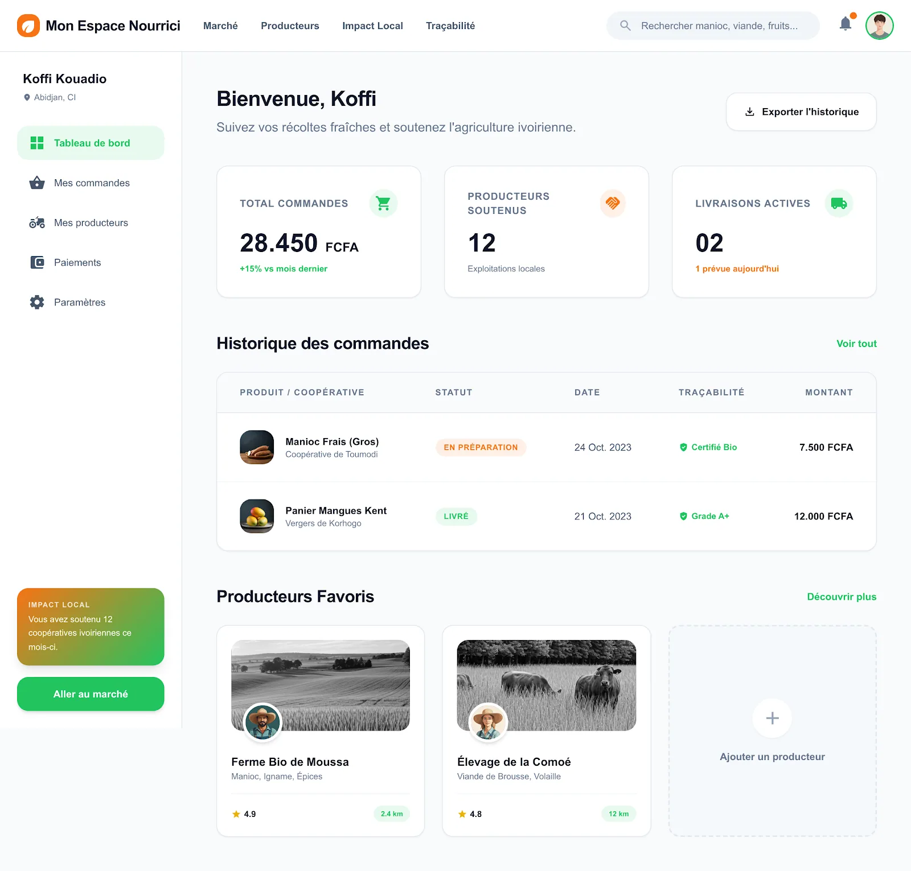
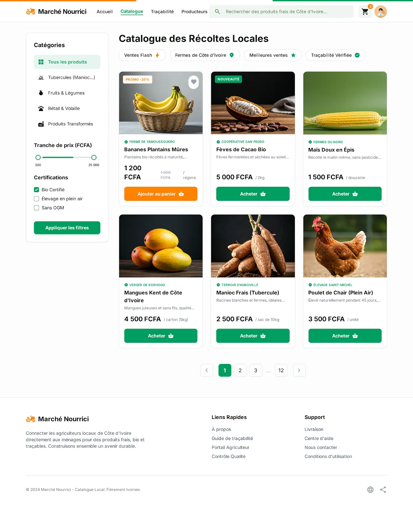
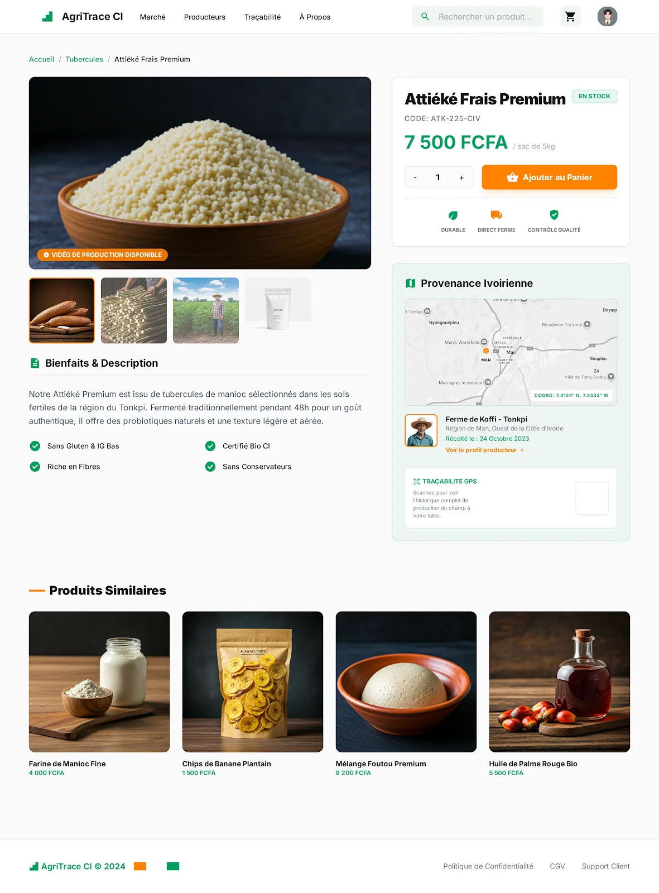
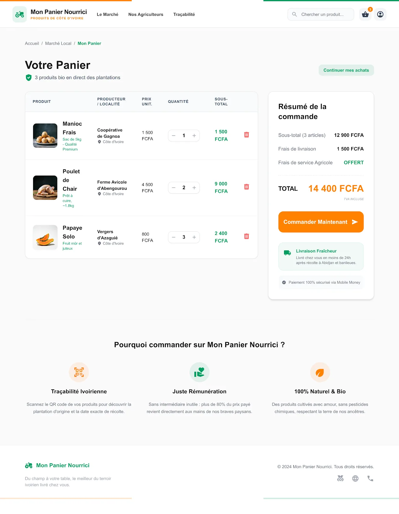

Nourrici
Marketplace alimentaire & espace utilisateur
Concevoir une marketplace de produits alimentaires locaux qui inspire confiance, du premier catalogue jusqu'au panier. Une interface claire, cohérente et pensée pour des achats récurrents.




- Année
- 2024
- Rôle
- UI/UX designer
- Cadre
- Projet de conception
- Stack & outils
- Figma · E-commerce · Dashboard utilisateur
Le point de départ
« Comment rendre des produits locaux désirables et rassurants sur un écran, sans surcharger les fiches, et faire tenir ensemble catalogue, panier et espace client dans un même langage ? »
Le livrable est une conception Figma. La marketplace n'a pas été développée ni ouverte au public.
La démarche
Rendre le catalogue lisible
Structurer les catégories, les filtres et les fiches produit autour des informations qui aident vraiment à choisir : origine, usage, prix, disponibilité.
Simplifier le panier
Réduire le nombre d'étapes et rendre les quantités, les totaux et les actions suivantes immédiatement compréhensibles.
Unifier l'expérience
Construire un design system e-commerce commun au catalogue, au panier et au tableau de bord utilisateur.
Ce qui a été livré
- Catalogue et fiches produit
- Parcours de panier simplifié
- Tableau de bord utilisateur
- Composants e-commerce réutilisables
Le résultat, sans exagérer
Une conception de marketplace cohérente, qui montre comment un design system peut tenir ensemble les différents moments d'un parcours d'achat. Elle reste une base de conception, pas une boutique en ligne.
Projet de conception — maquettes Figma, non développées.